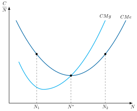
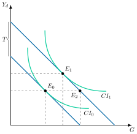
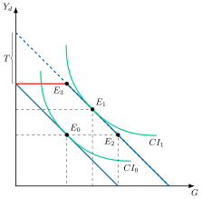
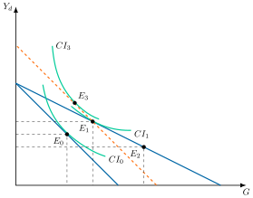

Apuntes para la oposición al Cuerpo de Diplomados Comerciales del Estado
22 La teoría del federalismo fiscal: la asignación óptima de las funciones entre los distintos niveles de gobierno para alcanzar el bienestar máximo. La financiación de las haciendas territoriales: impuestos, transferencias y deuda.
22.1 Introducción  1'
1'
La Economía del Sector Público estudia la intervención del sector público en una economía de mercado fundamentalmente a través de sus programas de ingresos y gastos públicos, con el objetivo de cumplir sus funciones asignativa, distributiva y de estabilización y crecimiento.
No obstante, el sector público no toma todas sus decisiones de manera centralizada, sino que, generalmente, en todos los países existe un gobierno central que diseña la política exterior o de defensa y un gobierno de carácter local o regional que tiene asignadas la capacidad de decisión en algunas cuestiones públicas en lo que afecta exclusivamente a los residentes en su jurisdicción.
Además, en algunos países, los denominados fiscalmente federales, existe un conjunto de gobiernos intermedios de carácter regional interpuestos entre el gobierno central y los gobiernos locales, como las CCAA en España, los Länder en Alemania, los Estados en EEUU o los Cantones en Suiza.
Concretamente, según el Índice de Autoridad Regional1, España se sitúa entre los países más descentralizados del mundo, junto con Alemania, Bosnia y Herzegovina e India.
La Teoría del Federalismo Fiscal es la parte de la Economía del Sector Público que se encarga de analizar cómo se adoptan las decisiones descentralizadas, tratando de resolver cuestiones como:
¿Cuál es la justificación económica de la descentralización?
¿Cómo se deben repartir las competencias?
¿Cuántos niveles de gobierno deben existir?
¿Cómo se deben financiar los niveles de gobierno?
Por consiguiente, el objetivo del presente tema es responder a las cuestiones anteriores a través del siguiente esquema:
Justificación económica de la descentralización, desde un punto de vista de eficiencia, equidad y estabilización.
Niveles de gobierno y competencias.
Financiación, mediante impuestos propios, transferencias y emisión de deuda.
22.2 Justificación económica de la descentralización 7'
Comenzando por la justificación económica, la descentralización se justifica en la medida en que el reparto del poder decisorio entre gobierno central y gobiernos territoriales permita alcanzar mejor los objetivos de eficiencia2, equidad y estabilización.
Eficiencia
Partiendo de la base de que a los gobiernos territoriales les interesa el bienestar de sus ciudadanos, la descentralización por motivos de eficiencia está muy ligada a la provisión de bienes públicos locales, es decir, aquellos cuyos beneficios solo son disfrutados por aquellos individuos que vivan cerca de donde se provean. Ejemplos de ellos son el alumbrado público, el servicio de bomberos o una presa, pero no la defensa o las relaciones exteriores, que benefician a todos los residentes del país.3
Existe una serie de motivos por los cuales se justifica la descentralización:
Según Oates (1972), la descentralización permite solventar mejor el problema de información imperfecta y asimétrica pues los gobiernos territoriales, al estar más cerca de los residentes en una jurisdicción, conocen mejor sus preferencias. En consecuencia, el Gobierno central tenderá a proveer un nivel uniforme de bienes públicos en todos los territorios, lo que puede resultar ineficiente si estos tienen preferencias diferentes.
Por ejemplo, es más que probable que los habitantes de Andalucía tengan unas preferencias más intensas por el gasto público en agricultura que los habitantes de Madrid.Teorema de descentralización: esto nos lleva a enunciar el Teorema de Descentralización de Oates, que sostiene que el nivel de bienestar alcanzado cuando cada jurisdicción escoge su nivel de consumo público de forma independiente será siempre igual o superior (y, casi siempre, superior) al que resultaría de un nivel uniforme de consumo, siempre que no existan ahorros de coste por provisión centralizada ni externalidades interjurisdiccionales.
Solución: descentralización fiscal
Si se permite que cada jurisdicción decida de manera autónoma sobre su nivel de bien público, podrá adaptarlo a las preferencias de sus residentes y acercarse a la condición de Samuelson de provisión eficiente de bienes públicos, según la cual un bien público debe proveerse hasta que la valoración social, es decir, la suma de las utilidades marginales de los residentes, \(\sum UMg_{i}\), iguale al coste marginal social, \(CMg_{S}\)4: \[\sum UMg_{i}=CMgS \tag{22.1}\] por ejemplo, una provisión uniforme del bien público, \(G^{*}\), puede resultar ineficiente por exceso para el territorio \(A\) y por defecto para el territorio \(B\).
Problema de revelación de preferencias
Aun con descentralización fiscal, puede ocurrir que no se cumpla la condición de Samuelson si el Gobierno territorial no es capaz de agregar las preferencias de los individuos de su jurisdicción (es decir, obtener \(\sum UMg_{i}\)). Esto puede ocurrir si hay problemas de revelación y de agregación de preferencias:
Problema de revelación de preferencias. Los individuos, sabedores de que sus preferencias reveladas determinarán la renta que el sector público les detraerá, pueden preferir revelar una utilidad menor y actuar como free-riders, por lo que se produciría infraproducción del bien público.
Problema de agregación de preferencias. Aun cuando los individuos estén dispuestos a revelar sus auténticas preferencias por el bien público, ¿cómo agrega el Gobierno territorial las preferencias de los distintos individuos para obtener \(\sum UMg_{i}\)?
Una posible solución a los dos problemas anteriores sería permitir el voto, de manera que el nivel de bien/gasto público sea decidido por mayoría simple. El problema del sistema de mayoría simple es que no asegura el cumplimiento de la condición de eficiencia de Samuelson, pues el nivel de gasto público vendrá determinado por las preferencias del votante mediano.
Para evitar los problemas de revelación y agregación y, además, asegurar la eficiencia de la condición de Samuelson, la descentralización fiscal y la regla del voto deben ir acompañadas de la libre movilidad de individuos entre las jurisdicciones. Es lo que se conoce como voto con los pies de Tiebout (1956).
Sistema de voto con los pies
Cada hacienda territorial decide su combinación de bienes públicos locales e impuestos de acuerdo a las preferencias de los ciudadanos de su jurisdicción, esto es, mediante voto con mayoría simple (es decir, elecciones). Pero ello supone que el bien se proveerá conforme a las preferencias del votante mediano, como advertíamos, no necesariamente eficiente.
Si a la descentralización fiscal y al voto se añade movilidad entre jurisdicciones (y sus costes son bajos), los individuos descontentos con la política fiscal de su territorio se desplazarán a la jurisdicción que ofrezca una combinación fiscal más cercana a sus preferencias personales (es decir, votarán “con los pies”).
Conforme se acentúan los movimientos de personas entre jurisdicciones, las preferencias dentro de cada jurisdicción se vuelven más similares, hasta el punto de que todos los votantes de una jurisdicción acaban siendo homogéneos y se convierten todos ellos en el mismo “votante mediano”. Por tanto, llegará un punto en que el nivel de bien/gasto público de cada jurisdicción será eficiente, pues, al venir determinado por el votante mediano y ser todos los ciudadanos de dicho territorio iguales al votante mediano, la asignación será eficiente.
Así, habrá jurisdicciones que ofrezcan muchas ventajas en términos de bienes públicos locales a familias con hijos (parques, columpios, etc.), mientras que otras estarán muy centradas en las necesidades de la tercera edad (accesibilidad, servicios sociales, etc.).
Críticas al sistema de voto con los pies
Coste de movilidad. La movilidad entre jurisdicciones es costosa (por ejemplo, cambio de casa, mudanza, hacer nuevas amistades, etc.). Puede ser factible a nivel municipal pero no a nivel país/entre países.
Congestión. La emigración en masa a una jurisdicción puede ser ineficiente si produce externalidades negativas (por ejemplo, congestión de los bienes públicos si son impuros –como las carreteras o los parques–)5.
Otros factores. La decisión de un individuo de vivir en una determinada jurisdicción no solo se basa en sus preferencias sobre bienes públicos e impuestos, sino también en otras variables (incluso más determinantes) como la familia, las amistades, las costumbres, etc.
La existencia de un número limitado de jurisdicciones, que impide cubrir todo el abanico de preferencias de los agentes6.
Evidencia empírica limitada. El modelo, aunque sugerente, solo se ajusta parcialmente a la evidencia empírica, que es limitada y mixta.
Restricciones políticas
La descentralización se puede justificar también porque pueden existir restricciones políticas por parte del gobierno central para proveer distintas cantidades de bienes en distintos territorios. Así, los gobiernos centrales se pueden enfrentar a distintas restricciones éticas o jurídicas que impediría la provisión de niveles eficientes en el sentido de Pareto del bien público en cada uno de los territorios.
A pesar de esto, no es raro encontrarse con programas de provisión de bienes públicos a cargo de un gobierno central que establecen diferentes niveles de provisión en función del territorio.
Conclusión
El federalismo fiscal conduce a ganancias de eficiencia asignativa.
No obstante, hay que recordar que la eficiencia no se manifiesta únicamente en su forma asignativa (es decir, distribución de recursos de la mejor manera posible), sino también en su vertiente productiva (es decir, menores costes de producción posibles): una excesiva descentralización de ciertos servicios públicos puede conducir a una pérdida de economías de escala que produzca pérdidas importantes de eficiencia productiva (por ejemplo, aeropuertos).
Críticas y recomendaciones
Más recientemente esta corriente de opinión se ha visto debilitada y contrarrestada por argumentos pro centralización. Las teorías que demuestran las ventajas de la descentralización van acompañadas de que no suelen verificarse en la práctica, lo que ha estimulado la realización de trabajos empíricos. Esta revisión de la teoría, que incorpora la teoría de la elección colectiva (incentivos de políticos y burócratas, problemas de información) y abandona la idea del planificador benevolente, se conoce como federalismo fiscal de segunda generación. Además, la toma en consideración de otros aspectos de la economía política ha venido a poner ciertos frenos a las recomendaciones indiscriminadas de descentralización:
Las contribuciones de Rodden (2003) han sido importantes en este sentido. Subrayan los riesgos de indisciplina fiscal que van ligados a una creciente descentralización. Además, viene a demostrar que la supuesta reducción de gasto público asociada a la descentralización de las tareas de gobierno solo se cumple cuando los gobiernos subcentrales tienen una notable dosis de autonomía tributaria, y se financian en gran medida con impuestos propios sobre los que poseen una amplia capacidad normativa.
También son reseñables las aportaciones de Tanzi (1996) o Huther y Shah (1998) en el sentido de subrayar las desventajas en un marco de un desarrollo institucional débil o la apertura de mayores posibilidades de cultivar la corrupción en el nivel local.
La mayor o menor eficiencia en la prestación descentralizada de bienes públicos se relaciona casi siempre con el carácter, local o nacional, de dichos bienes. Así, la recomendación consiste en que la provisión de bienes públicos de carácter local se haga por el nivel descentralizado mientras que la correspondiente a los bienes nacionales se provea a un nivel central. En la práctica, no obstante, existen frecuentes interacciones entre los distintos niveles de gobierno. O dicho de otra manera, es habitual reconocer las ganancias de eficiencia en la prestación de determinados bienes y servicios por parte del nivel descentralizado, pero con ciertas limitaciones, lo que justifica la existencia de regulaciones por parte del nivel central que dotan de cierta uniformidad a la prestación de los bienes y servicios7.
Equidad
Al igual que ocurre con la provisión de los bienes públicos locales, podría también descentralizarse la función de redistribución, de forma que cada jurisdicción decidiera unilateralmente cuánta redistribución desea. Esto, sin embargo, plantea distintos problemas:
En las haciendas territoriales cuyos individuos tengan, por lo general, una elevada renta, las preferencias de sus ciudadanos por la redistribución serán, en principio, menores, por lo que las políticas de equidad serán escasas. Esto hará que los individuos más pobres emigren a otras jurisdicciones donde las preferencias por la redistribución sean mayores, es decir, jurisdicciones generalmente más pobres, por lo que el coste de la redistribución se traslada a las jurisdicciones con menos recursos.
Al mismo tiempo, los individuos de elevada renta de las jurisdicciones más pobres se desplazarán a los territorios que menos gastan en redistribución, lo que a su vez disminuirá la capacidad redistributiva de las jurisdicciones más pobres. Por lo tanto, la descentralización de la redistribución puede hacer que las distintas jurisdicciones tengan distinta capacidad redistributiva.
Así, las regiones con individuos más pobres tendrían menor capacidad para llevar a cabo la redistribución, con lo que persistiría la desigualdad entre los residentes de distintas jurisdicciones. Dado que la concepción de equidad es de ámbito global, esto obligaría al gobierno central a intervenir para reducir la desigualdad entre jurisdicciones.
Resultado
El federalismo fiscal no promueve la equidad, por lo que es preferible que el Gobierno central conserve poderes fiscales para asegurar una redistribución entre territorios. Es necesario el papel del Estado para imponer coactivamente la redistribución.
Problema
Aunque es cierto que la redistribución ejecutada a nivel central es más efectiva que una descentralizada, también es cierto que el Gobierno central puede no ejercer dicha labor de manera correcta por tener incentivos perversos. En efecto, podría infravalorar a las regiones más despobladas y pobres, que son poco importantes en las elecciones, y priorizar el gasto en las regiones más pobladas y ricas.
Además, ha habido otras aportaciones que subrayan que también existe campo para la acción de los gobiernos territoriales con fines redistributivos.
En este sentido, la aportación de Pauly (1973) puede considerarse que inició este tipo de recomendaciones:
Partía de la base de que la redistribución puede considerarse como un bien público local, del cual puede haber distintas demandas en los distintos territorios.
Los individuos de mayor nivel de renta obtienen una mayor utilidad de los aumentos de renta que obtengan los individuos más desfavorecidos en su territorio. Es por ello que los ricos de una región preferirán una política redistributiva con acento local.
Dado que los individuos de mayor nivel de renta obtienen utilidad de las transferencias realizadas a personas de renta más baja, la tarea de redistribución se considera óptima en el sentido de Pareto.
Esta idea de que los objetivos de redistribución pueden ser alcanzados de manera más eficiente a través de políticas ejercidas por los gobiernos subcentrales se fortalece bajo supuestos de movilidad imperfecta y de eficiencia en la toma de decisiones colectivas.
Conclusión
En definitiva, en la Teoría del Federalismo Fiscal no existe consenso respecto a la deseabilidad de la descentralización por motivos de equidad, aunque la visión predominante (Musgrave 1959; Oates 1972) es, como veíamos, que la función redistributiva debe ser llevada a cabo de forma centralizada8.
Estabilización
Por último, la estabilización es una función de carácter macroeconómico, cuyo objetivo es atenuar las fluctuaciones cíclicas de la economía en torno a su senda potencial de crecimiento, tratando de lograr la estabilidad de precios y empleo.
Existe un amplio consenso en que el objetivo de estabilización debe estar centralizado por al menos 3 razones:
Los gobiernos territoriales, al no emitir su propia moneda carecen de política monetaria, elemento importante en el diseño de las políticas de estabilización y que debe coordinarse con la política fiscal.
Además, en el caso de la política monetaria, la descentralización generaría una mayor expansión monetaria, fomentando la inflación. La política monetaria y la emisión de moneda están siempre en el núcleo duro de las funciones de cualquier configuración estatal, se reservan al ámbito central.La mayoría de variables macroeconómicas –nivel de precios, tipo de cambio, tipo de interés e incluso, en función de la movilidad, la tasa de paro– se determinan en el ámbito nacional o supranacional, por lo que las jurisdicciones son incapaces de influir. Esto convierte a las jurisdicciones de un sistema federal en lo que en Macroeconomía se denomina “economías pequeñas abiertas”.
Una política fiscal aplicada localmente se difuminaría rápidamente entre jurisdicciones, afectando relativamente menos a quien la aplica y generando efectos externos sobre el resto de jurisdicciones9.
Resultado
El federalismo fiscal no facilita la tarea estabilizadora de la política económica, por lo que es preferible que el Gobierno central conserve poderes fiscales para asegurar un correcto control del ciclo.
Aplicación en España
Hemos visto que el federalismo fiscal se justifica por motivos de eficiencia, pero no por motivos de equidad ni de estabilización. De ahí que los países descentralizados hayan tratado de buscar un equilibrio en el respeto de estos principios.
En España, por ejemplo, se ha desarrollado un sistema fiscal fuertemente descentralizado para asegurar la eficiencia, es decir, que las decisiones políticas se corresponden con las preferencias de los ciudadanos de cada territorio (por ejemplo, la mayor descentralización se ha producido en los bienes públicos más sensibles para los ciudadanos, como son sanidad, educación y servicios sociales).
Pero, al mismo tiempo, se han articulado fondos para asegurar la equidad entre los distintos territorios (por ejemplo, Fondo de Compensación Interterritorial, Fondo de Garantía, Fondos de Convergencia) y se han conservado las potestades fiscales más importantes para garantizarse poderes estabilizadores del ciclo (por ejemplo, el Estado conserva la potestad legislativa sobre los impuestos más importantes –IVA e IS– y sobre la mayor parte del IRPF, en el que las CCAA solo tienen margen sobre la tarifa autonómica, habiéndose desprendido únicamente de tributos con escasa capacidad recaudadora –Impuesto sobre el Patrimonio, sobre Sucesiones y Donaciones, sobre el Juego, etc.–)10.
22.3 Tamaño de la jurisdicción y el reparto de competencias 4'30"
Hasta ahora hemos justificado por qué es beneficiosa la descentralización fiscal: la función asignativa debe descentralizarse, pero no las funciones redistributiva y estabilizadora.
Esto plantea dos cuestiones: cuántos niveles de gobierno debe haber y qué gastos de asignación deben corresponder a cada nivel. Para responder a la primera se analiza el tamaño óptimo de las áreas descentralizadas, es decir, el tamaño de la población a cubrir por cada uno de los gobiernos territoriales. Esta cuestión puede responderse a través de una analogía introducida por Buchanan: la Teoría de los Clubes (Buchanan 1965).
Hipótesis
Esta teoría se basa en los siguientes supuestos:
Jurisdicción = club. Buchanan señala que una jurisdicción se puede asimilar a un club: se trata de un grupo de individuos que se unen para lograr un fin común: la provisión de un bien público local. Determinar el tamaño óptimo de la jurisdicción es por tanto equivalente a decidir el número óptimo de socios de un club.
Mismas preferencias.
Misma renta. En estas circunstancias (si se cumple que las preferencias y la renta son iguales), el bien público puede financiarse mediante un impuesto de suma fija (de capitación11) dado que este será eficiente y equitativo.
Desarrollo teórico
La idea básica es que al ampliar el tamaño de la jurisdicción (es decir, al ampliar el ámbito de aplicación de un bien o servicio público a un individuo más), se producen 2 efectos contrapuestos para los beneficiarios:
(+) Beneficio marginal. La financiación del bien se reparte entre más individuos, por lo que el coste de financiación per cápita (es decir, lo que paga cada beneficiario) es menor. Suponemos que la provisión del bien público está sujeta a fuertes costes fijos, por lo que un aumento de los usuarios aumenta los costes variables, pero disminuye los costes unitarios (es decir, disminuye el pago que cada beneficiario tiene que hacer para financiarlo).
(–) Coste marginal. Al atender a más usuarios, el bien público se congestiona, de modo que para mantener el mismo nivel de servicio hay que aumentar la dotación y el coste total de provisión crece.
Por consiguiente, el ámbito óptimo de aplicación (es decir, número de individuos, o nivel de descentralización) será aquel en el que el \(BMg\) se iguale al \(CMg\), es decir, aquel en el que el ahorro de impuestos por incorporar a un individuo adicional iguala al coste marginal de proveerle el servicio.12
Gráficamente, en un plano de coste por habitante, \(C/N\), y tamaño de la jurisdicción, \(N\), como el de la Figura 22.1 se puede representar la curva de costes medios, \(CMe\), que tendrá forma de U, es decir, presenta rendimientos a escala mixtos. Aquí, \(C\left(N,G\right)\) es el coste de proveer el nivel \(G\) del bien público a una jurisdicción de \(N\) habitantes, de modo que el coste medio es \(CMe=C/N\) y el coste marginal, \(CMg=\partial C/\partial N\), es el de incorporar un habitante más. Por lo tanto, la teoría de costes nos ayudará a resolver este problema.
Así, el tamaño óptimo de la jurisdicción vendrá determinado por el mínimo de la curva de costes medios que, además, coincidirá con el punto de intersección con la curva de costes marginales, \(CMg\), de provisión del bien público, es decir, en \(N^{*}\):
Si \(N<N^{*}\) (como en \(N_{1}\)) el bien público está infrautilizado, y aumentar \(N\) tiene un \(CMg\) bajo y permite reducir el \(CMe\) (existen rendimientos a escala en la provisión del bien público).
Si \(N>N^{*}\) (como en \(N_{2}\)) el bien público se va congestionando, y para mantener la utilidad de los individuos constante serán necesarios desembolsos crecientes (por ejemplo, habrá que hacer más carreteras y aumentarán los costes de gestión).

Desarrollo analítico
Supongamos que la función de utilidad del agente representativo depende del consumo del bien privado, \(X\), del consumo del bien público, \(G\), y del número de individuos del club, \(N\) (es decir, del tamaño de la jurisdicción) \[\max_{\{X,G,N\}}U\left(X,G,N\right) \tag{22.2}\] sujeto a dos restricciones: \[\begin{aligned} P_{X}\cdot X+\tau=Y\\ \tau\cdot N=CF+P_{G}\cdot G \end{aligned} \tag{22.3}\] donde \(\tau\) es el impuesto de suma fija a pagar por cada beneficiario del bien o servicio público, \(CF\) son los costes fijos de provisión, \(P_{X}\) es el precio del bien privado (igual a su \(CMg\)) y \(P_{G}\) es el coste variable de cada unidad de bien público (\(CMg\)).
Resolviendo el problema13, obtenemos que el tamaño de la región descentralizada (\(N\)) será mayor cuanto:
Mayor sea la demanda del bien o servicio público, \(u^{\prime}_{G}\) (utilidad marginal del bien público).
Menor sea, en valor absoluto, la pérdida de utilidad por congestión que causa un miembro adicional, \(u^{\prime}_{N}\), que es negativa.
Mayor sea el coste fijo de proveer el bien, \(CF\).
Aplicación práctica
El objetivo del modelo anterior es determinar un “club” o jurisdicción de individuos con las mismas preferencias sobre un bien o servicio público. Es decir, que habría tantos clubs/jurisdicciones como preferencias para cada bien público. Esto implica que un mismo individuo podría estar sujeto a diferentes jurisdicciones para cada bien público (por ejemplo, un individuo pertenecería a un club para la prestación del servicio de bomberos y a otro diferente para el servicio de recogida de basuras). Por lo tanto:
Resulta obvio que la descentralización que es óptima en teoría resulta inviable en la práctica, porque los meros costes de gestión y coordinación de dicho sistema serían sin duda superiores a las ganancias de eficiencia14.
Así, la teoría de la descentralización óptima debe entenderse no como una teoría a aplicar a rajatabla, sino como una teoría que guíe la acción política.
Además, tampoco podemos olvidar la existencia de razones históricas y políticas en el establecimiento de los límites jurisdiccionales.
Reparto de competencias
Respecto a qué gastos asignativos corresponden a cada nivel, la descentralización se rige también por los dos principios anteriores: cada gobierno territorial debe decidir sobre las cuestiones que afectan exclusivamente a sus residentes, siempre que esto agote los rendimientos a escala en la provisión (Albi et al. 2017). De ello se derivan tres implicaciones:
Incluso gobiernos de igual naturaleza, como los municipios, deberían tener competencias de gasto diferentes en función de su tamaño.
Cuando la provisión individualizada suponga pérdidas considerables de rendimientos a escala, deberían crearse uniones entre jurisdicciones para proveer conjuntamente esos bienes y servicios.
Si, por una descentralización imperfecta, el gasto local genera efectos externos, el gobierno central debería intervenir para internalizarlos, por ejemplo cofinanciando el gasto mediante una transferencia condicionada.
22.4 Financiación de las haciendas territoriales 7'
Ya hemos visto la justificación de la descentralización fiscal y el tamaño óptimo que deben adoptar las haciendas territoriales para proveer bienes y servicios públicos, además de otras cuestiones relacionadas. Ahora vamos a ver las diferentes formas en que dichas haciendas territoriales pueden financiar los bienes públicos.
Existen diferentes opciones, que pueden coexistir, como en el caso de España:
Impuestos propios.
Transferencias de niveles superiores de gobierno.
Emisión de deuda. Analicemos en detalle las diferentes formas de financiación.
Impuestos propios
Comenzando por los impuestos, la financiación de las haciendas territoriales a través de tributos propios tiene como objetivo principal la corresponsabilidad fiscal, esto es, que las haciendas financien una parte sustantiva de su gasto mediante impuestos propios y visibles para los contribuyentes, pues así:
Los Gobiernos territoriales se vuelven más responsables en sus decisiones de gasto, tratando de ajustarlo a sus ingresos, claramente definidos. Es decir, permite limitar las expansiones ineficientes de gasto que se podrían dar si la financiación se realizase únicamente mediante transferencias.
Los ciudadanos de dicho territorio perciben mejor el verdadero coste de los bienes y servicios públicos que reciben, pues los financian en buena parte con sus propios impuestos.
Se rebajan las tensiones entre el Gobierno central y el territorial sobre las transferencias necesarias, pues con tributos propios las haciendas disponen, en teoría, de herramientas para cubrir sus gastos.
En el caso de la descentralización de los tributos, y a diferencia de lo que ocurre con el gasto, su objetivo principal no es la obtención de ganancias de eficiencia, sino corresponsabilizar al gobierno territorial en la obtención de los recursos. Así, la descentralización de los tributos se convierte en un ejercicio de compromiso entre:
Conceder a los gobiernos territoriales discrecionalidad suficiente para que puedan determinar su nivel de ingresos.
Limitar dicha discrecionalidad para no mermar la capacidad de redistribución y estabilización del gobierno central.
Tipos
A su vez, la financiación mediante “tributos propios” puede adoptar diferentes formas de más a menos margen de actuación por parte de las haciendas territoriales15:
Impuestos propios en sentido estricto, que son aquellos diseñados y gestionados (es decir, liquidación, recaudación, e inspección) por las haciendas territoriales. En el caso español, esto es posible siempre que los impuestos que se establezcan no invadan hechos imponibles ya gravados por el Estado, es decir, se trata básicamente de impuestos relacionados con el medioambiente.
Impuestos cedidos, que son aquellos creados y regulados por el Estado, pero cuya recaudación y buena parte de la gestión se ceden a las haciendas territoriales, junto con una capacidad normativa limitada. En el caso español, se trata básicamente de impuestos sobre la riqueza (Patrimonio, Sucesiones y Donaciones, etc.).
Impuestos compartidos, que son aquellos en los que el Estado diseña los elementos básicos del impuesto y los gestiona, pero deja cierta discrecionalidad de diseño a las haciendas territoriales. En el caso español, se trata del IRPF, para el que se prevé una tarifa autonómica. La tarifa autonómica del IRPF se corresponde con una participación autonómica del 50% en el rendimiento de este impuesto.
Impuestos participados (cesión parcial de la recaudación), que son aquellos regulados, gestionados y recaudados por el Estado, pero en los que este transfiere parte de la recaudación a las haciendas territoriales. En el caso español, se trata sobre todo de impuestos indirectos armonizados a nivel europeo (IVA, impuestos especiales, etc.).
50% de la recaudación líquida por IVA (según un índice de consumo).
58% de la recaudación líquida por impuestos especiales.
100% de la recaudación líquida por el Impuesto sobre la Electricidad.
Recargos
Además de los tipos anteriores, en ocasiones no se descentraliza por completo un tributo, sino que se establece un sistema de recargos, en el que el gobierno central fija las normas para el cálculo de la base imponible y el esquema liquidatorio del tributo y los gobiernos territoriales establecen un recargo (aumento de los tipos) o una bonificación (disminución de tipos).
Competencia fiscal
Otorgar autonomía a las haciendas territoriales en el diseño de los impuestos permite cumplir mejor con el principio de corresponsabilidad fiscal, pero puede dar lugar a competencia fiscal, es decir, al intento de cada hacienda territorial de atraer a su jurisdicción, con impuestos más bajos, empresas y factores productivos instalados en otras (política de tipo beggar-thy-neighbour). Si todas hacen lo mismo, ninguna consigue atraer factores, porque la base imponible de cada hacienda acaba siendo la misma, pero los tipos quedan por debajo de los necesarios para financiar el nivel adecuado de gasto público. Se trata de una situación del dilema del prisionero.
| C | NC | |
|---|---|---|
| C | \(2,2\) | \(0,3\checkmark\) |
| NC | \(3\checkmark,0\) | \(1\checkmark,1\checkmark\) |
Los gobiernos territoriales pueden cooperar (C,C) y establecer un tributo razonable que les permita una recaudación aceptable, o pueden no cooperar, reduciendo el tipo impositivo con el fin de aumentar la base imponible del tributo y con ello su recaudación. Como vemos, se trata de un juego de tipo dilema del prisionero que lleva a un equilibrio de Nash ineficiente (NC, NC). Ello hace necesario establecer mecanismos de cooperación regional que eviten un race to the bottom.
Eficiencia
El principio de eficiencia establece que el tributo no debe generar movimientos de factores o actividades económicas. De acuerdo con este principio, un impuesto será descentralizable si una diferenciación de tipos entre jurisdicciones no genera movimientos significativos.
De ahí que los impuestos que en mayor o menor medida se suelen descentralizar sean aquellos que gravan actividades poco móviles: fallecimiento (Sucesiones), patrimonio, bienes inmuebles (IBI), rendimientos del trabajo (IRPF, ineficiencia reducida dada la limitada movilidad de los trabajadores), consumo (IVA16), etc., mientras que se ha mantenido la competencia estatal plena sobre otros impuestos que gravan actividades más móviles (por ejemplo, impuesto de sociedades, cuya descentralización generaría ineficiencias importantes por ser el capital muy móvil).
Transferencias
En ocasiones, la descentralización de tributos puede no ser suficiente para financiar la totalidad de los gastos de los gobiernos territoriales, por lo que se complementan sus ingresos mediante transferencias, que son una cantidad de dinero que un gobierno (donante) entrega a otro (beneficiario) para que financie sus gastos.
Ventajas
Las transferencias funcionan como un mecanismo de equidad y redistribución. Las transferencias de nivelación cubren la diferencia entre la capacidad fiscal y la necesidad de gasto de cada jurisdicción. Corrigen dos tipos de desequilibrio: el vertical, entre niveles de gobierno (por ejemplo, el Estado conserva las fuentes tributarias pero las CCAA asumen competencias de gasto), y el horizontal, entre jurisdicciones del mismo nivel. Corregir el vertical no elimina el horizontal, que exige llevar recursos de las regiones ricas a las pobres. Además, también existen motivos de eficiencia que justifican la existencia de transferencias entre niveles de gobierno, en particular, transferencias de naturaleza compensatoria.
Desventajas
No contribuyen a la corresponsabilidad fiscal, porque una parte del gasto la pagan contribuyentes de otros territorios, lo que puede llevar a un gasto público excesivo. El riesgo es mayor si el gobierno territorial espera que, cuando gaste o se endeude en exceso, el gobierno central acuda a rescatarlo, situación que se conoce como restricción presupuestaria blanda17.
Puede crear tensiones entre las haciendas territoriales y el Estado.
Tipos
Las transferencias que realiza el Gobierno a las haciendas territoriales pueden ser de tres tipos18:
Transferencias incondicionales, que son aquellas que se conceden sin condiciones sobre su destino (por ejemplo, el Gobierno central transfiere 1.000 M€ al territorio, y éste es libre para decidir su destino).
Transferencias condicionales no compensatorias, que son aquellas que se conceden condicionadas a un uso particular, pero cuya cuantía no depende del nivel de gasto del beneficiario en dicho concepto. El donante transfiere una cuantía fija independientemente del gasto del beneficiario (por ejemplo, el Gobierno central transfiere 1.000 M€ al territorio para que éste lo dedique a infraestructuras).
Transferencias condicionales compensatorias (cofinanciación), que son aquellas que se conceden condicionadas a un uso particular, y, además, su cuantía depende del nivel de gasto de la hacienda territorial en dicho concepto (por ejemplo, el Gobierno central aporta un euro por cada euro que aporta el territorio, es decir, financia el 50 % de su gasto en infraestructuras).
Transferencias incondicionales
Las transferencias incondicionales son aquellas que se conceden sin condiciones sobre su destino, por lo que no hay una restricción del uso de los fondos. Para analizarlas, se partirá de los siguientes supuestos:
Existe una jurisdicción que provee un único bien público local, \(G\), no sujeto a congestión y de coste unitario de producción, \(p_{G}\), definido en términos de renta privada a la que se renuncia para financiar el gasto del bien público.
La jurisdicción tiene una renta \(Y_{0}\), que se supone fija, de modo que la renta disponible, \(Y_{d}\), tras el pago de impuestos para financiar el bien será: \(Y_{d}=Y_{0}-p_{G}\cdot G\). Por lo tanto, en ausencia de transferencias, los impuestos serán suficientes para financiar \(G\).
La decisión entre usos públicos y privados se realiza a través de una función de utilidad que depende de la renta disponible y el gasto público19: \(u\left(Y_{d},G\right)\).
De esta forma, el nivel óptimo de provisión del bien público se obtendrá resolviendo el siguiente problema de maximización: \[\max\quad u\left(Y_{d},G\right) \tag{22.4}\] sujeto a la restricción presupuestaria de los agentes de esta jurisdicción, según la cual la renta es igual a la renta disponible (que determina sus posibilidades de consumo privado) más la cuantía destinada al consumo del bien público local: \[Y_{0}=Y_{d}+p_{G}\cdot G \tag{22.5}\] que ante la transferencia incondicional pasaría a ser \[Y_{0}+T=Y_{d}+p_{G}\cdot G \tag{22.6}\]
Gráficamente, en un plano \(Y_{d}\) y \(G\) como el de la Figura 22.2, se representa la curva de indiferencia \(CI_{0}\) y la restricción, \(\dfrac{Y_{0}}{p_{G}}\), siendo la solución óptima el punto de tangencia \(E_{0}\) donde se alcanza el nivel óptimo de provisión del bien público. En este contexto:
Si se establece una transferencia incondicional, \(T\), para financiar el gasto público, se genera un efecto renta puro ya que no afecta a los precios relativos \(\dfrac{p_{G}}{p_{x}}\), donde \(p_{x}\) es el precio del bien privado \(x\), de modo que se incrementa el consumo del bien público y del bien privado si ambos bienes son normales. Además, el aumento del gasto público será inferior a la cuantía de la transferencia, ya que aumenta también la demanda del bien privado.
Por consiguiente, el nuevo equilibrio sería \(E_{1}\), donde se produce la tangencia entre la curva de indiferencia \(CI_{1}\) y la restricción, \(\dfrac{Y_{0}+T}{p_{G}}\), y no \(E_{2}\) donde la transferencia se destinaría plenamente al gasto público20.

Transferencias condicionales no compensatorias
Por otro lado, las transferencias condicionales no compensatorias son aquellas que se conceden condicionadas a un uso particular, pero cuya cuantía no depende del nivel de gasto de la hacienda territorial en dicho concepto.
Así, la restricción de condicionalidad podría interpretarse como el requisito de que el gasto final en el bien para el que se realiza la transferencia aumente, al menos, en la cuantía de lo transferido.
Gráficamente, como se observa en la Figura 22.3 se produce de nuevo un desplazamiento paralelo hacia afuera de la restricción presupuestaria de la hacienda territorial, con la diferencia de que ahora la nueva restricción se define por tramos: no son alcanzables aquellos puntos en los que el nuevo gasto público sea inferior a la transferencia, ya que esta se concede para dedicarse en su integridad a dicho fin. Con esto en cuenta el nuevo equilibrio sería el punto \(E_{2}\), donde el gasto público aumentaría en la cuantía de la transferencia.
Sin embargo:
Para que esto fuera viable el donante debería saber cuánto habría gastado el beneficiario en gasto público de no haberse realizado la transferencia. El problema es que en la mayoría de los casos relevantes no dispondrá de esta información21.
Siendo esto así, la restricción de condicionalidad solo puede interpretarse de forma que el gasto final, \(G_{1}\), en el bien para el que se realiza la transferencia sea mayor que la cuantía de lo transferido, \(p_{G}\cdot G_{1}\geq T\).
Esto se traduce en una extensión del tramo presupuestario por la línea de puntos, donde los puntos a la izquierda del punto \(E_{3}\) no serían accesibles dada la restricción de condicionalidad.
El nuevo equilibrio dependerá de las preferencias comunitarias por la provisión pública.22

Transferencias condicionales compensatorias o cofinanciación
Por su parte, las transferencias condicionales compensatorias o cofinanciación son aquellas que se conceden condicionadas a un uso particular, pero cuya cuantía depende del nivel de gasto de la hacienda territorial en dicho concepto. La transferencia compensatoria supone que el gobierno central aporta \(\tau\) unidades monetarias por cada unidad monetaria que aporta el beneficiario, por lo que el coste unitario de provisión del bien público para el gobierno subcentral se reduce de \(p_{G}\) a \(\dfrac{p_{G}}{1+\tau}\).
Ahora la restricción presupuestaria sería: \[Y_{d}+\dfrac{p_{G}}{1+\tau}G=Y_{0} \tag{22.7}\]
Gráficamente, en un plano \(Y_{d}\) y \(G\) como el de la Figura 22.4, la transferencia:
Modifica la pendiente de la restricción, pasándose de un equilibrio inicial, \(E_{0}\), a un equilibrio final en el punto \(E_{1}\).
También podría darse en el equilibrio \(E_{2}\), pero la evidencia empírica señala que es más factible el punto \(E_{1}\)23.
Por otro lado, si se compara con una transferencia incondicional de idéntica cuantía, es decir, trazando una línea paralela a la restricción inicial que corte al equilibrio \(E_{1}\), accediendo a una curva de indiferencia más alejada del origen, \(CI_{3}\), en el punto \(E_{3}\). Del punto \(E_{3}\) se puede observar que tiene dos propiedades importantes en relación a \(E_{1}\):
El nivel de provisión del bien público es menor en \(E_{3}\) que en \(E_{1}\), ya que la transferencia condicionada compensatoria de \(E_{1}\) genera, además del efecto renta, un efecto sustitución. Este efecto sustitución, al abaratar relativamente el bien público, refuerza la expansión del gasto público por encima de la que se produciría con una transferencia incondicional.
Por lo tanto, a igual coste para el donante, el aumento del gasto público de la hacienda territorial es mayor con cofinanciación que con una transferencia incondicional o condicional no compensatoria.El nivel de utilidad de la jurisdicción es mayor en \(E_{3}\), ya que la transferencia condicionada compensatoria de \(E_{1}\) limita la elección al obligar a consumir más del bien público, reduciendo de esta forma la posibilidad de alcanzar niveles de utilidad mayores.

Conclusiones de la financiación territorial mediante transferencias
Las conclusiones respecto a las transferencias son claras:
Si el Gobierno central quiere estimular el gasto público territorial, lo aconsejable es una transferencia condicional compensatoria (esto es, la cofinanciación).
Si el gasto público local o regional produce efectos externos positivos sobre otras jurisdicciones, los gobiernos locales estarían infravalorando los beneficios de ese bien público por lo que lo infraproveen. En estos casos, una transferencia condicionada compensatoria, al estimular la provisión del bien, servirá para internalizar el efecto externo.Si el Gobierno central quiere maximizar el bienestar territorial, lo aconsejable es una transferencia incondicional.
Las transferencias incondicionales están generalmente ligadas a objetivos de equidad interregional, ya que las regiones más pobres tendrían unos niveles de provisión de bienes públicos más bajos. Por consiguiente, las transferencias incondicionales permitirían garantizar unas provisiones mínimas aceptables.
Sistema español
El sistema español de financiación autonómica se basa, además de en los impuestos propios que veíamos anteriormente, en transferencias del Estado (que se nutren, a su vez, de parte de la recaudación de los “impuestos propios” de las CCAA). Dichas transferencias se articulan a través de fondos.
El más importante de ellos es el “Fondo de Garantía de Servicios Públicos Fundamentales”, que busca la equidad, es decir, que todas las Comunidades puedan ofrecer un nivel similar en la prestación de los servicios públicos fundamentales: sanidad, educación y servicios sociales.
Sin embargo, se trata de un fondo que no condiciona sus transferencias al gasto en dichos bienes públicos. Es decir, se trata de transferencias no condicionales, por lo que, conforme al análisis teórico visto antes, podemos decir que, en el fondo, el sistema español busca maximizar el bienestar territorial más que estimular el gasto público.
A continuación se harán 2 precisiones con respecto al análisis anterior de los efectos en el gasto público de la financiación vía transferencias:
Bien público como bien inferior.
Efecto adherencia o efecto papel matamoscas.
Bien público inferior
Los análisis anteriores se basaban en dos bienes, el privado y el público, que eran normales, de manera que cuando aumentaba la renta de los individuos, aumentaba el consumo de los bienes. Sin embargo, merece la pena plantearse la posibilidad de un bien o servicio público inferior, es decir, aquel cuya demanda por parte de la comunidad disminuye cuando aumenta su renta:
Pensar en un bien público inferior no es un mero ejercicio teórico sin ninguna aplicabilidad práctica. La sanidad y la educación públicas, servicios provistos públicamente aunque no sean bienes públicos puros, pueden comportarse como bienes inferiores: cuando no disponen de renta suficiente, muchos ciudadanos acuden a los hospitales públicos y envían a sus hijos a colegios públicos.
Pero cuando su renta aumenta lo suficiente, abandonan la sanidad y educación públicas y comienzan a utilizar la sanidad privada (para ahorrarse las esperas) y la educación privada (para proporcionar a sus hijos mayores oportunidades), por lo que la demanda del bien público se reduce con la renta.
Pues bien, en el caso de bienes públicos inferiores, una transferencia del Gobierno central a las haciendas territoriales podría disminuir el consumo de bien público (disminuirá seguro en el caso de una transferencia incondicional –efecto renta negativo–, y podría disminuir en el caso de cofinanciación –efecto renta negativo pero efecto sustitución positivo–).
Implicaciones de política económica
Por lo tanto, a la hora de diseñar sus objetivos de gasto público, el Gobierno central no solo debe analizar el tipo de transferencia que hará, sino también la naturaleza del bien público cuyo consumo quiere estimular.
El efecto adherencia o efecto papel matamoscas
Pese a que el modelo anterior permite analizar las transferencias sobre el gasto algunas de sus implicaciones no son consistentes con la evidencia empírica:
Por ejemplo, según el modelo una transferencia incondicionada de \(T_{0}\) es equivalente a un incremento de la renta privada de los residentes de la jurisdicción en la misma cuantía, provocando el mismo desplazamiento en la recta presupuestaria como se puede observar en ( 22.6).
Por consiguiente, las transferencias incondicionales dan lugar al mismo aumento del gasto público que los aumentos de renta privada de la misma magnitud.
No obstante, los estudios empíricos no corroboran dicha predicción de la teoría, sino que sugieren que una transferencia incondicional de una unidad monetaria da lugar a un aumento del gasto público mayor que un aumento de la misma magnitud en la renta privada de los residentes de la jurisdicción24. Este fenómeno se denomina efecto adherencia o efecto papel matamoscas –flypaper effect–, porque refleja que el dinero tiende a quedarse “pegado” en el primer sector, público o privado, en el que “impacta”.
Albi et al. (2017) señalan que al efecto papel matamoscas se le han dado diversas explicaciones. La más frecuente consiste en suponer que las elecciones públicas se adoptan por votación mayoritaria, pero que los votantes desconocen la cuantía de las transferencias incondicionadas que reciben sus gobernantes.
Además, al igual que en la teoría de la burocracia de Niskanen (1971), el objetivo de los gobernantes es maximizar el tamaño de su presupuesto. Por ello, con el fin de aumentar su presupuesto y mantener los votos, los gobernantes pueden introducir una ilusión fiscal cuando reciben una transferencia \(T_{0}\), consistente en hacer creer a los votantes que el coste de provisión del bien \(G\) es menor que su coste real. Por ejemplo, podrían reducir los impuestos en la cuantía de la transferencia \(T_{0}\) y hacer creer a los votantes que el coste unitario de provisión del gasto público \(G\) es \(\left(p_{G}\cdot G-T_{0}\right)/G\) en vez de \(p_{G}\). Ante esta reducción del precio observado –reflejada en menores impuestos–, los ciudadanos votarán aumentos en el nivel de gasto.
Implicaciones de política económica
Por lo tanto, a la hora de diseñar sus objetivos de gasto público, el Gobierno central debe considerar la posibilidad de que una transferencia incondicional a las haciendas territoriales no sea equivalente a una transferencia de recursos al sector privado, por lo que, si su objetivo es maximizar el bienestar de los ciudadanos de esa jurisdicción, podría ser conveniente transferir dichos recursos directamente a los ciudadanos (aunque en la práctica, es muy difícil para el Gobierno central articular transferencias directas a los ciudadanos de un determinado territorio –por ejemplo, una bajada de impuestos afecta a todos los territorios–)25.
Emisión de deuda
Por último, el gobierno central puede permitir que las haciendas territoriales emitan deuda para financiarse, lo que se justifica por dos motivos: financiar inversiones de largo alcance repartiendo su coste entre generaciones (por equidad intergeneracional, como recoge la regla de oro de las finanzas públicas), y servir de alternativa a los impuestos cuando la capacidad tributaria propia es limitada. No obstante, su uso debe ser limitado por 2 motivos:
Erosión de la función estabilizadora del Gobierno central: la deuda no solo es un medio de financiación, sino también un instrumento fundamental de política económica por sus efectos sobre el tipo de interés, la demanda agregada, etc., pudiéndose poner en riesgo la política de estabilización del gobierno central26.
Riesgo moral y free-rider: existen incentivos a endeudarse indefinidamente, llevando a las haciendas territoriales a aplicar políticas fiscales expansivas financiadas con deuda, pues existe un problema de riesgo moral y de free-rider27. La hacienda territorial tendrá incentivos para llevar políticas fiscales expansivas, pues se beneficiará del aumento de la demanda agregada de dicha política, pero sin tener que hacer frente a los costes asociados a esta28.
En efecto, las regiones saben que la insostenibilidad de su política fiscal no se va a traducir directamente en un aumento del riesgo región, ya que con la unión monetaria que representa el país el riesgo región de cada jurisdicción se difumina en el riesgo moneda, común para todo el país (es decir, se considera que los bonos regionales, emitidos en la moneda común, son perfectamente sustitutivos).
Además, aun cuando eventualmente los mercados de deuda se fragmentasen y aumentara la prima de riesgo de la región, la hacienda territorial podría tener la esperanza de recibir ayuda financiera del Gobierno central ante el miedo de éste a que:
Se produzca un contagio y se extienda el pánico financiero al resto del país; y
Los gobiernos regionales culpen al Gobierno central de forma creíble al no disponer las haciendas territoriales de una capacidad tributaria propia plena.
Esto es precisamente lo que ha ocurrido en España: muchas CCAA y ayuntamientos se endeudaron en exceso aprovechándose del bajo riesgo país de España. Y cuando los mercados de deuda se fragmentaron y las primas de riesgo de algunas CCAA y Ayuntamientos aumentaron, se produjo un “rescate” encubierto del Estado a través del Fondo de Liquidez Autonómica (planteándose incluso la posibilidad de quitas), sentando un precedente que puede acentuar en el futuro los problemas de riesgo moral.
Soluciones
Por lo tanto, las soluciones deben pasar por:
Limitar el endeudamiento de las haciendas territoriales. En España a través de la Ley Orgánica 2/2012 de Estabilidad Presupuestaria y Sostenibilidad financiera, el artículo 13 fija el límite de deuda de cada comunidad autónoma en el 13% de su PIB regional.
Sujetar la emisión de deuda territorial a la autorización estatal. Artículo 135.3 de la Constitución, que exige autorización por ley para emitir deuda pública o contraer crédito, y artículo 14.3 de la LOFCA: “Para concertar operaciones de crédito en el extranjero y para la emisión de deuda o cualquier otra apelación de crédito público, las Comunidades Autónomas precisarán autorización del Estado”
Compromiso de no rescate de las haciendas territoriales por parte del Estado.
22.5 Conclusiones  30"
30"
Como conclusión, el federalismo fiscal va más allá de un simple reparto de competencias, sino que nos obliga a reflexionar sobre su aplicación práctica en España.
Por un lado, la descentralización a las CCAA ha creado una situación única donde el poder de gasto y el control de los ingresos se superponen. Sin embargo, la cesión simultánea de soberanía fiscal a la UE, junto al control del BCE sobre la política monetaria, genera una tensión que dificulta la capacidad del Gobierno central para estabilizar la economía.
Por otro lado, como señala un informe de FEDEA de 2024, la existencia de una “restricción presupuestaria blanda” y la falta de transparencia en el sistema actual plantean un interrogante crucial: ¿cómo se puede garantizar la equidad y la responsabilidad fiscal si los incentivos políticos no están alineados con la sostenibilidad financiera? La teoría es clara, pero la realidad demuestra que los sistemas de financiación deben ser lo suficientemente flexibles y transparentes para adaptarse a un entorno de gobernanza multinivel sin sacrificar la coherencia ni la estabilidad.
Apéndice
22.A.1. Otros desarrollos de la teoría del federalismo fiscal
A continuación se presentan otros desarrollos no vistos en el tema
Transparencia y rendición de cuentas
Otras aportaciones de la Teoría del Federalismo Fiscal se centran en la relación de agencia entre políticos (agentes) y electorado (principal). En este caso, el electorado debe tener un criterio para valorar la actuación del gobierno y decidir sobre su reelección.
La descentralización favorece además la competencia por comparación entre gobiernos (argumento a favor de la descentralización).29 Al poder comparar los resultados de distintos gobiernos, los votantes obtienen información adicional que les permite valorar mejor la actuación del suyo de cara a la reelección, lo que aumenta los incentivos de los gobiernos a seguir el interés público (Boadway y Shah 2009).
La provisión descentralizada abre la puerta a la competencia entre gobiernos locales. La teoría de la Hacienda pública subraya a menudo la carencia de incentivos para actuar de manera eficiente en la labor de gobierno, lo que sucede en mayor medida en el marco de un único gobierno que ejerce todas las competencias. Las ventajas de la competencia entre gobiernos son mayores cuanto mayor sea la capacidad de los individuos de irse a vivir a otra región. Breton (1996) sitúa esta competencia entre gobiernos como la principal razón para descentralizar el sector público. Brennan y Buchanan (1980) llevan este argumento más lejos. Si el sector público no es un planificador benevolente, sino un Leviatán que trata de maximizar su tamaño, la competencia entre gobiernos y la movilidad de los contribuyentes limitan su capacidad para recaudar y, con ella, el nivel de gasto (Albi et al. 2017).
Asociado a las ventajas de competencia, se encuentran los incentivos a incrementar la innovación en el campo del suministro de los bienes locales. No siempre está claro cuál es el método más eficiente de prestar un determinado servicio público. Ante la duda, una buena receta es la de dejar ensayar métodos diferenciados en diferentes regiones, lo que permitirá comparar los resultados e ir convergiendo hacia la utilización del método más eficiente.
Reparto del riesgo entre las distintas jurisdicciones
Se trata de una cuestión relacionada con la función aseguradora de la política fiscal. Si las diferentes jurisdicciones se enfrentan a shocks aleatorios imperfectamente correlacionados y existe aversión al riesgo queda justificada la contratación de un seguro. Para ello existen varias soluciones:
El Gobierno central asume la función aseguradora, en cuyo caso aparecen problemas de riesgo moral.
Constitución de rainy day funds: los gobiernos regionales constituyen provisiones en periodo de bonanza para hacer frente a tiempos difíciles. Es una solución menos habitual, aunque se utiliza en algunos países (por ejemplo, Finlandia).
Creación de un sistema de reparto de riesgo entre jurisdicciones, basado en la diversificación del riesgo o risk pooling: cada región aporta a un fondo común que compensa a la que sufre un shock, de modo que el coste se reparte entre todas. Funciona mejor cuanto menos correlacionados estén los shocks, y si son independientes la varianza del coste que soporta cada una de las \(N\) regiones se divide por \(N\).
Relación más estrecha entre costes y beneficios
El papel que juegan los precios en el mercado a la hora de estimular la eficiencia se puede trasladar a la prestación de servicios públicos: la eficiencia aumentará cuanto más estrecha sea la vinculación entre los servicios provistos y el pago correspondiente de impuestos. Esto es, cuando exista una estrecha correspondencia entre el pago de impuestos por parte de los ciudadanos y los beneficios que recibe en forma de servicios públicos. Parece claro que esta vinculación, o al menos la percepción de la misma, es mayor para los ciudadanos cuando la prestación es llevada a cabo por una administración local.
Ahora bien, esta adecuación entre costes y beneficios será mayor cuando el gasto correspondiente a la provisión de bienes públicos por parte de los gobiernos locales se haya financiado con recursos provenientes de impuestos financiados por los ciudadanos de ese territorio.
Si el gobierno local depende de transferencias del gobierno central para financiar la prestación, los incentivos se trasladan hacia la negociación entre gobiernos con el fin de obtener las máximas transferencias posibles. De esta forma se reducen los incentivos de los ciudadanos a controlar la acción de gobierno local a través del voto. Este razonamiento proporciona un motivo para hacer descansar la financiación de los gobiernos locales preferentemente en impuestos propios.
La restricción presupuestaria blanda
Se habla de restricción presupuestaria blanda cuando un gobierno subcentral espera que el gobierno central le preste ayuda financiera si gasta en exceso o se endeuda demasiado, de modo que no soporta todo el coste de sus decisiones. Es un problema de riesgo moral propio de los sistemas descentralizados (Boadway y Shah 2009).
Surge porque los gobiernos subcentrales dependen de transferencias, que en parte se diseñan para que puedan cubrir sus necesidades de gasto, y porque prestan servicios esenciales como la sanidad o la educación. Si no pueden prestarlos con un mínimo de calidad, el gobierno central se siente obligado a intervenir, a veces por mandato legal (en Alemania, por ejemplo, un municipio no puede quebrar). El incentivo a excederse es mayor cuanto más discrecionales son las transferencias. La capacidad de endeudarse añade una vía más, aunque el problema puede darse también sin deuda.
En España se manifiesta en la percepción de que parte de los costes de las CCAA puede trasladarse a la Administración Central mediante aportaciones adicionales de fondos o la condonación de la deuda acumulada (Fuente 2024). El Fondo de Liquidez Autonómica es el ejemplo más reciente (ver “Emisión de deuda”).
Anunciar que no habrá rescate no basta, porque ese compromiso es difícil de sostener. Las soluciones que se plantean son:
Transferencias basadas en fórmulas objetivas y no en el déficit real de cada gobierno, que resultan más creíbles que las discrecionales.
Que los gobiernos subcentrales se financien con deuda propia, sometida a la disciplina de los mercados (como en Canadá), lo que exige una autonomía real sobre su presupuesto.
Cláusulas de no rescate y reglas fiscales. El Tratado de Maastricht prohíbe el rescate de un gobierno por los bancos centrales o por la UE, y el Pacto de Estabilidad refuerza esas disposiciones.
22.A.2. Hechos estilizados sobre la descentralización
A continuación se presentan algunos hechos estilizados sobre la descentralización.
La descentralización en el mundo
A nivel mundial, existe una clara tendencia hacia la descentralización. Un ejemplo de ello es Latinoamérica, cuyo índice de centralización del gasto público pasó del 76% en 1975 al 70% en 1995. Además, parece haber una correlación positiva entre el nivel de descentralización y nivel de desarrollo de los países. En los países más desarrollados la centralización del gasto público suele ser sustancialmente inferior, rondando el 50%. Los SP africanos suelen estar muy centralizados, con un grado de centralización superior al 80%.
Nivel de descentralización por funciones del sector público
Se pueden encontrar una serie de patrones en cuanto al grado de descentralización en la provisión del SP en la mayoría de países:
Los servicios comunitarios y de vivienda suelen ser los más descentralizados, con un grado de descentralización del 71%.
Les siguen los servicios de educación y sanidad, con un grado de descentralización del 64%.
Los servicios menos descentralizados son los relacionados con la Seguridad Social y el Bienestar, con una media del 18%.
Estos grados de descentralización son consistentes con el enfoque normativo, que establece que los servicios de distribución son alcanzados en mayor grado a nivel central.
Determinantes de la descentralización
La literatura positiva de la descentralización ha encontrado varias fuerzas que promueven la descentralización:
Oates (1972) encuentra, a través de un análisis de sección cruzada a nivel nacional, que el tamaño del país y la renta per cápita son determinantes a la hora de explicar la descentralización.
Panizza (1999), a partir de la estimación de un modelo teórico de un país lineal, encuentra que la descentralización aumenta de nuevo con el tamaño del país y la renta per cápita, pero también con el nivel de democracia, la fragmentación etnolingüística y la diversidad cultural.
Finalmente, la descentralización puede no responder a motivos de eficiencia, sino a motivos políticos: la descentralización se utiliza también para acallar deseos secesionistas. Italia (Lombardía) y Bélgica (Flandes) son buenos ejemplos de este tipo de descentralización.
22.A.3. Retos de la financiación autonómica y local en España
El apunte “Financiación autonómica y local” de Ángel de la Fuente (2024), publicado por Fedea en enero de 2024, recopila y resume los principales trabajos de Fedea sobre la materia.
Diagnóstico del sistema actual
Se identifican tres grandes problemas en el sistema de financiación territorial:
Complejidad y falta de transparencia. El modelo es tan enrevesado que resulta incomprensible para el ciudadano medio. Las transferencias entre el Estado y las comunidades autónomas (CCAA) se canalizan con criterios variados y a veces contradictorios, lo que dificulta la rendición de cuentas.
Distribución desigual y arbitraria. El reparto de recursos entre CCAA no sigue criterios claros de equidad ni de capacidad fiscal. Sin contar las comunidades forales, y con datos de 2021, hay un abanico de unos 25 puntos porcentuales entre la mejor y la peor financiada por habitante ajustado. Las comunidades forales (País Vasco y Navarra) reciben entre 50 y 100 puntos más que la mejor financiada del régimen común.
Déficit de responsabilidad fiscal. Las CCAA, sobre todo las de régimen común, no son plenamente responsables de sus decisiones de gasto, ya que parte de sus costes son asumidos por la Administración Central. Esto genera una “restricción presupuestaria blanda”, que incentiva el gasto excesivo sin asumir el coste político de subir impuestos.
Propuestas de reforma
Se propone avanzar hacia un sistema más simple, transparente, equitativo y responsable, mediante una reforma gradual y coordinada. Las principales recomendaciones son:
Revisión de competencias y herramientas fiscales. Es necesario adaptar la división de competencias entre administraciones y revisar el régimen foral para que participe en los mecanismos de solidaridad interterritorial.
Fondo complementario de nivelación. Como medida inmediata, se propone crear un fondo financiado por el Estado para reducir o eliminar la distancia que separa de la media del régimen común a las comunidades peor financiadas (Murcia, Valencia, Andalucía y Castilla-La Mancha). El coste estimado sería de unos 3.000 millones de euros.
Mejoras técnicas. Se sugiere reformar el sistema de retenciones y entregas a cuenta para que reflejen más rápidamente las decisiones fiscales de las CCAA, mejorar el cálculo de la recaudación normativa y regular las escalas de referencia de los tributos cedidos.
Mecanismos colectivos de responsabilidad fiscal. Para evitar desequilibrios horizontales, se plantea crear tramos autonómicos colegiados del IVA y los Impuestos Especiales, cuyos tipos serían fijados por las CCAA y repartidos según población ajustada. Esto permitiría aumentar los recursos sin beneficiar desproporcionadamente a unas regiones sobre otras.
Necesidad de pacto político
Se subraya que dos cuestiones clave requieren consenso político:
Nivel de servicios públicos deseado. Es necesario decidir cuánto se está dispuesto a pagar en impuestos para mantener o mejorar las prestaciones públicas.
Grado de nivelación territorial. Se debe pactar qué parte de las diferencias fiscales entre territorios debe corregirse mediante transferencias. Aunque la nivelación debe ser alta para garantizar la cohesión, podría no llegar al 100% si eso facilita el acuerdo con las comunidades más reacias a la redistribución.
Se advierte del riesgo de una deriva hacia un sistema de financiación “a la carta”, negociado bilateralmente con algunas comunidades, lo que podría debilitar la capacidad del Estado para garantizar la cohesión social y territorial. Se reconoce que esta situación ya existe en el régimen foral, pero se insiste en que no debe extenderse a otras regiones.
22.A.4. Ordinalidad y redistribución
La ordinalidad y la nivelación son dos principios que se contraponen en el debate sobre la financiación autonómica.
Ordinalidad
La ordinalidad es el principio según el cual la nivelación no debe alterar el orden de las comunidades autónomas por capacidad fiscal por habitante, de modo que una comunidad con más capacidad fiscal que otra antes de las transferencias debe seguir teniendo más financiación por habitante después, aunque la diferencia entre ellas se reduzca.30 Sus defensores sostienen que incentiva la responsabilidad fiscal y la eficiencia: si una comunidad se esfuerza por mejorar su economía y recaudar más, se beneficia de ello, y se premia así la buena gestión de sus finanzas.
Nivelación
La nivelación (o redistribución) es el proceso por el cual el sistema de financiación transfiere recursos de las CCAA con más capacidad fiscal a las que tienen menos, para que todas dispongan de una financiación similar por habitante ajustado, es decir, por unidad de necesidad de gasto, y puedan ofrecer servicios públicos básicos (como educación y sanidad) en condiciones de igualdad. Es fundamental para la cohesión social y territorial, porque el acceso a los servicios no depende entonces del lugar de residencia, y refuerza la solidaridad dentro del país. Sin embargo, una nivelación muy intensa puede desincentivar a las comunidades de renta alta a recaudar más, ya que gran parte de ese esfuerzo se destina a otras regiones, y puede generar riesgo moral en las receptoras, que sienten menos presión para gestionar eficientemente sus recursos o aumentar sus ingresos.
Críticas al principio de ordinalidad
De la Torre y Fernández-Villaverde (2025) rechazan el principio de ordinalidad, tanto en su versión débil, la definida arriba, como en la fuerte, según la cual quien más aporta debe recibir más, y lo consideran una idea equivocada que se presenta como razonable y justa. Sus razones son las siguientes:
Contradice la lógica redistributiva del Estado del bienestar, en el que cada persona contribuye según su capacidad y recibe según su necesidad. Por ejemplo, una comunidad con más niños escolarizados debe recibir más financiación aunque eso altere el orden de renta entre comunidades.
Exigir que las comunidades mantengan su posición relativa de renta tras impuestos y transferencias ignora las diferencias en necesidades de gasto, como la estructura demográfica. Un ejemplo ilustrativo es el de dos regiones que comparten un sistema común de pensiones y de sanidad: una más productiva y joven y otra menos productiva y más envejecida. Tras cotizaciones, impuestos y transferencias, la región menos productiva y más envejecida puede acabar con más recursos por habitante que la otra, lo que, en su opinión, muestra que el principio es absurdo. Según estos autores, regiones con ese perfil existen en España, como Asturias o Cantabria.
Carece, según estos autores, de consenso académico y político.
En su versión fuerte, un contribuyente de renta muy alta recibiría más del Estado que un jubilado sin ingresos.
Reconocen como legítimo el argumento de que una redistribución excesiva desincentiva el esfuerzo, pero consideran que debe plantearse de forma abierta y no a través de la ordinalidad.
Fernández-Villaverde resume su postura señalando que no es posible defender a la vez el Estado del bienestar y la ordinalidad territorial sin contradicción.
La tensión entre ambos principios
Existe una tensión inherente entre la ordinalidad y la nivelación. Una nivelación total (que los recursos por habitante ajustado sean iguales en todas las comunidades para los mismos servicios) puede alterar el orden original de las comunidades. Por el contrario, respetar estrictamente la ordinalidad puede generar grandes desigualdades en la capacidad de gasto. El desafío en cualquier reforma es encontrar un equilibrio que promueva la solidaridad sin penalizar la eficiencia ni la buena gestión fiscal. En esta línea, Fedea considera que el grado de nivelación y el respeto de la ordenación original (la ordinalidad) ofrecen un margen de negociación que podría acomodar parcialmente las demandas de los territorios de renta alta dentro de un esquema razonable (Fuente 2024).
22.A.5. El Índice de Autoridad Regional
El Índice de Autoridad Regional (RAI, por sus siglas en inglés) mide la autoridad política que ejercen las regiones o estados subnacionales dentro de un país. Lo ha desarrollado un equipo de académicos liderado por Liesbet Hooghe, Gary Marks y Arjan H. Schakel (Hooghe et al. 2016; Shair-Rosenfield et al. 2021). Su objetivo es ir más allá de la distinción tradicional entre Estados “federales” y “unitarios” y cuantificar de forma matizada el grado de descentralización en 96 países, con datos anuales de 1950 a 2018. Se considera región cualquier nivel de gobierno situado entre el municipal y el nacional cuya población media supere los 150.000 habitantes.
Frente a los indicadores fiscales
El índice nace como alternativa a las medidas fiscales habituales, como el peso del gasto o de los ingresos subnacionales, que tienen dos limitaciones. El volumen de gasto no indica quién decide: un gobierno regional puede gestionar mucho dinero con poca autonomía real. Además, dan una sola cifra para todos los niveles subnacionales y no recogen regímenes diferenciados, como los territorios forales del País Vasco y Navarra. Los datos lo confirman: el gasto subnacional explica solo en parte la variación del RAI (R² = 0,39) y el desequilibrio vertical, medido como transferencias sobre gasto subnacional, no guarda relación con él (R² = 0,00). Canadá, Suiza o Estados Unidos, muy descentralizados, tienen un desequilibrio comparable al de países centralizados como Bulgaria o Eslovaquia.
Medición de la autoridad regional
El RAI evalúa la autoridad regional a través de diez dimensiones, que se agrupan en dos grandes categorías:
Autogobierno (“self-rule”). Mide la capacidad de una región para ejercer poder dentro de sus propias fronteras. Evalúa si la región tiene su propio parlamento y ejecutivo, el alcance de sus competencias políticas (como la sanidad o la educación), y su autonomía fiscal y de endeudamiento.
Participación en el gobierno central (“shared-rule”). Mide la influencia que una región ejerce en el gobierno central del país. Se analiza su participación en la aprobación de leyes nacionales, su control sobre el ejecutivo central, su poder en la distribución de los impuestos nacionales y su papel en las reformas constitucionales.
Cada dimensión puntúa en una escala corta (por ejemplo, de 0 a 3 la profundidad institucional y de 0 a 4 la autonomía fiscal), de modo que cada región o nivel regional obtiene hasta 18 puntos de autogobierno y 12 de gobierno compartido, un máximo de 30. La puntuación de un país suma la de todos sus niveles, ponderada por población, por lo que puede superar los 30 y favorece a los países con más niveles. El índice se actualiza cada año y registra más de 1.300 cambios entre 1950 y 2010.
Posición de España
Con datos de 2018, España suma 35,6 puntos (22,6 de autogobierno y 13,0 de gobierno compartido)31. Solo la superan Alemania (37,7) y Bosnia y Herzegovina (36,3), y empata con India (35,6). Queda por delante de Bélgica (33,9), Estados Unidos (29,6), Canadá (27,8), Suiza (26,5), Italia (26,0), Francia (21,8) y Reino Unido (9,6), y es el país con mayor puntuación del mundo en gobierno compartido. Esta posición es notable porque España no es un Estado federal en el sentido clásico.
La trayectoria muestra la rapidez del proceso: el índice pasa de 3,4 en 1977 a 29,4 en 1983, cuando todas las comunidades autónomas ya tenían estatuto e instituciones propias, y se estabiliza en torno a 35 desde 2002. Los propios autores del índice describen esa etapa como una cascada de pactos territoriales iniciada por el País Vasco, Cataluña y Galicia, que el Estado extendió a todo el territorio con la fórmula del “café para todos” (Shair-Rosenfield et al. 2021).
La posición depende de cómo se agregue. Si se considera solo el nivel regional más autoritativo, que en España son las comunidades autónomas, la puntuación es de 23,7 sobre 30, la octava de 79 países, por detrás de Alemania (27,0), Bosnia y Herzegovina (26,7), Suiza (26,5), Bélgica (25,5), Australia (25,5), Argentina (25,0) y Estados Unidos (24,6). La diferencia se debe a que la cifra nacional suma también otros niveles, como las provincias, y las regiones con régimen diferenciado.
Perfil de las comunidades autónomas
El perfil es desigual. Las comunidades puntúan al máximo en instituciones propias (3 sobre 3) y representación (4 sobre 4), y alto en competencias (3 sobre 4) y gobierno compartido, gracias a las conferencias sectoriales y a la Conferencia de Presidentes. En cambio, su autonomía fiscal es de 2,9 sobre 4, frente a unos 4 puntos en Estados Unidos, Canadá o Suiza (salvo el País Vasco y Navarra, que alcanzan el máximo por su régimen foral), y su autonomía de endeudamiento es de 1 sobre 3, por la autorización previa del Estado, frente a 3 en Estados Unidos, Canadá, Alemania o Suiza. La descentralización española es, por tanto, más de gasto y de participación que de ingresos y deuda, lo que ayuda a entender el déficit de corresponsabilidad fiscal y la restricción presupuestaria blanda.
22.A.6. Ejemplos de transferencias
A continuación se presentan ejemplos prácticos tanto de España como de la UE.
Transferencias incondicionales
Son fondos que se otorgan sin restricciones sobre su uso. Los gobiernos receptores tienen total libertad para gastarlos en lo que consideren más adecuado para sus ciudadanos.
- Ejemplo en España. El Fondo de Suficiencia Global. Es una transferencia que el Estado hace a las Comunidades Autónomas para financiar sus competencias, y los recursos pueden ser utilizados de forma discrecional.
Transferencias condicionales no compensatorias
También conocidas como subvenciones no compensatorias, estas transferencias están condicionadas a que el gobierno receptor gaste los fondos en un área específica, pero la cantidad de la transferencia no depende del gasto que la entidad receptora ya esté realizando en ese sector.
Ejemplo en España. Los fondos de políticas activas de empleo del Servicio Público de Empleo Estatal (SEPE). Se reparten entre las comunidades autónomas en la Conferencia Sectorial de Empleo y Asuntos Laborales con criterios objetivos y deben destinarse a esas políticas, pero la cuantía de cada comunidad no depende de cuánto gaste con sus recursos propios.
Ejemplo en la UE. Las subvenciones del Mecanismo de Recuperación y Resiliencia (NextGenerationEU). Cada Estado miembro tiene asignada una cuantía máxima de contribución financiera no reembolsable, que recibe a medida que cumple los hitos y objetivos de las reformas e inversiones acordadas con la Comisión Europea. La cantidad no se calcula como un porcentaje del gasto propio del Estado, sino que se vincula al cumplimiento de esos hitos y objetivos.
Transferencias condicionales compensatorias (cofinanciación)
Son fondos que “igualan” o complementan una parte del gasto del gobierno receptor en un área específica. Para recibir el dinero, el gobierno subnacional debe aportar su propia parte del coste.
- Ejemplo en la UE. Los Fondos Estructurales y de Cohesión, como el FEDER (Fondo Europeo de Desarrollo Regional), el Fondo Social Europeo Plus (FSE+) y el Fondo de Cohesión. La UE cofinancia proyectos de desarrollo regional (como la construcción de un parque tecnológico o la modernización de pymes) o de transporte y medio ambiente (como una nueva línea de alta velocidad o una planta de gestión de residuos), con la condición de que el Estado o la comunidad autónoma también aporten un porcentaje del coste. La cantidad que recibe la entidad receptora aumenta a medida que aumenta su propio gasto en el proyecto, hasta un tope de cofinanciación (en el Fondo de Cohesión, el 85% del coste).
Términos del glosario de este tema
34 términos · ver el glosario completo
Bibliografía
Ver 22.A.5 (Índice de Autoridad Regional).↩︎
En el modelo básico NOEM de Galí y Monacelli (para una pequeña economía abierta), la función estabilizadora de la economía doméstica es también la que maximiza el BE (ambas funciones se cumplen simultáneamente).↩︎
En sentido amplio, el federalismo fiscal aplica el mismo análisis a servicios que prestan los gobiernos territoriales, como la sanidad o la educación, aunque son bienes privados provistos públicamente, porque son rivales y se puede excluir de ellos (Stiglitz y Rosengard 2015).↩︎
Nótese que estamos planteando la condición de Samuelson como \(\sum UMg_{i}=CMg_{S}\) porque lo vamos a ilustrar en un contexto de equilibrio parcial (como hace Bowen). Formulada en un contexto de equilibrio general, la condición de Samuelson sería \(\sum RMS^{G,X}_{i}=RMT^{G,X}\) (es decir, las valoraciones del bien público G en términos del bien privado X).↩︎
Por ejemplo, la emigración de una jurisdicción A a otra B genera, por un lado, un aumento de las bases fiscales en la localidad de destino, pero también puede ocasionar una mayor congestión en los bienes y servicios públicos (y al contrario ocurrirá en la localidad de origen). Como, en general, será difícil internalizar los efectos externos causados por los movimientos migratorios, el resultado final puede ser ineficiente. Por otra parte, las decisiones de los gobiernos subcentrales en ocasiones afectan a otros gobiernos como, por ejemplo, en la instalación de una industria contaminante en un área limítrofe, y en tanto esos efectos no se manifiesten en el mecanismo de precios, habrá ineficiencia.↩︎
Solo con diez bienes públicos locales y tres niveles de provisión (alto-medio-bajo), serían necesarias \(3^{10}\) jurisdicciones para cubrir todo el abanico de posibles preferencias por la provisión pública. Obviamente, en la realidad, tanto el número de jurisdicciones como la diferenciación de ofertas públicas locales es mucho menor.↩︎
Ver 22.A.1 (otros desarrollos de la teoría del federalismo fiscal) y 22.A.2 (hechos estilizados sobre la descentralización).↩︎
Ver 22.A.4 (ordinalidad y nivelación).↩︎
Cuando el gasto público de una jurisdicción afecta al bienestar de los residentes en otras regiones, se dice que existe un efecto externo interjurisdiccional.↩︎
Ver 22.A.3 (retos de la financiación autonómica y local en España).↩︎
En rigor, se trata de un impuesto según el beneficio que cada individuo obtiene del bien público, que equivale a un impuesto de capitación porque todos los individuos son idénticos (Albi et al. 2017).↩︎
La intuición es que, mientras el bien está infrautilizado, cada nuevo residente cuesta menos de lo que paga, que es el coste medio, y su entrada rebaja el impuesto de los demás. Cuando la congestión hace que cueste más de lo que paga, conviene dejar de ampliar la jurisdicción.↩︎
El impuesto de suma fija será: \[\tau=\dfrac{CF}{N}+\dfrac{P_{G}\cdot G}{N}\]↩︎
De esta forma, el diseño de una descentralización óptima plantea un intercambio o trade-off entre las ganancias de eficiencia de crear múltiples niveles de gobierno local y los costes de gestión a que esto da lugar. El punto de equilibrio de este trade-off no se puede determinar en términos teóricos solamente, aunque es claro que elementos como la superficie del país y las diferencias económicas y culturales entre las diferentes zonas jugarán un papel importante a la hora de diseñar el grado “óptimo” de descentralización.↩︎
Esta clasificación es didáctica. En la terminología de la LOFCA, todos estos impuestos son tributos cedidos, total o parcialmente, con o sin capacidad normativa autonómica: el IRPF se cede al 50 % con capacidad normativa sobre la tarifa, y el IVA y los impuestos especiales se ceden parcialmente sin ella.↩︎
El IVA: genera distorsiones si la imposición es:
En destino: los consumidores se desplazan al lugar con menor gravamen.
En origen: distorsiona las decisiones de producción/localización.
Ver 22.A.1 (la restricción presupuestaria blanda).↩︎
Ver 22.A.6 (ejemplos de transferencias en España y en la UE).↩︎
Esta función de utilidad se puede interpretar bien como que los individuos son idénticos y es la del agente representativo, bien como las preferencias del votante mediano o bien como una función de bienestar social↩︎
No obstante, existen 2 casos en los que la transferencia se traduce íntegramente en gasto público:
Bien privado neutro. Si el bien privado es neutro (por contraposición a “bien” y “mal”), entonces los individuos no lo valoran nada, y la curva de indiferencia será vertical. El equilibrio será una solución de esquina.
Bien privado independiente de la renta. Si el bien privado es independiente de la renta (por contraposición a “bien normal” y “bien inferior”), entonces la demanda de dicho bien no depende de su renta.
Por ejemplo, un gobierno que realiza una transferencia para mejorar las escuelas públicas difícilmente sabrá cuánto se habría gastado de sus recursos propios el gobierno beneficiario de no haberse realizado la transferencia.↩︎
Como se acaba de señalar, el nuevo equilibrio tras la transferencia condicional no compensatoria dependerá de cómo sean las preferencias comunitarias por la provisión pública, aunque, al igual que en el caso de la transferencia incondicional, el aumento del gasto será inferior al importe de la transferencia. Si la elasticidad renta del consumo privado es muy alta y la elasticidad renta de consumo de bienes públicos es muy baja, entonces el aumento del gasto es mayor que si la transferencia fuese incondicional: con una incondicional se situaría a la izquierda de \(E_{3}\), pero con una condicional debe situarse al menos en \(E_{3}\). Por el contrario, si las elasticidades renta del bien público y del bien privado son parecidas, el efecto será equivalente al de una transferencia incondicional, situándose en los dos casos en un punto como \(E_{1}\), a la derecha de \(E_{3}\).↩︎
En el punto \(E_{2}\) la renta privada se vería reducida y el aumento del bien público estaría por encima de la transferencia. Esto dependerá de la elasticidad-precio de la demanda del bien público: si es menor a 1 entonces el equilibrio será \(E_{1}\) (el gasto público aumenta menos que la transferencia) pero si es mayor a 1 entonces el equilibrio será \(E_{2}\) (aumenta más).
No obstante, pese a que ambos resultados son factibles la evidencia empírica señala que el equilibrio \(E_{1}\) es el más factible, siendo la elasticidad inferior a 1.↩︎
La intuición es que el dinero que llega al ayuntamiento tiende a quedarse en el presupuesto en lugar de volver a los vecinos en forma de rebajas de impuestos. Según las estimaciones que recogen Rosen y Gayer (2010), cada unidad monetaria de transferencia genera unos 40 céntimos de gasto público, mientras que una unidad adicional de renta privada solo genera unos 10.
Albi et al. (2017) señalan los trabajos de Gramlich (1977) y Bastida et al. (2009), los cuales recogen evidencia empírica del efecto para el conjunto de los municipios españoles.↩︎
Este “efecto pegamento” ha sido considerado por el Gobierno español a la hora de diseñar algunos fondos de apoyo a la financiación autonómica. Así, por ejemplo, el Fondo para la Financiación de los Pagos a Proveedores, puesto en marcha por el Gobierno central en 2012, que tiene como objetivo liquidar las deudas comerciales de las administraciones territoriales. Para ello, el Gobierno central paga directamente a la empresa a la que adeuda la hacienda territorial, por lo que se asegura que los recursos movilizados (unos 41.800 M€ entre comunidades autónomas y entidades locales) llegan en su integridad al tejido empresarial. La administración territorial devuelve después esos recursos mediante un préstamo sujeto a un plan de ajuste.↩︎
Concretamente, en España durante la crisis inmobiliaria se vio cómo la deuda autonómica fue un determinante fundamental del déficit del país.↩︎
Ver 22.A.1 (la restricción presupuestaria blanda).↩︎
También en España se dio dicha situación, donde durante el boom inmobiliario ayuntamientos y CCAA se endeudaron en exceso aprovechándose del bajo riesgo país. Sin embargo, tras el estallido de la crisis en 2008 los mercados de deuda se fragmentaron y las primas de riesgo se dispararon, obligando al Estado Central a un “rescate” encubierto a través del Fondo de Liquidez Autonómica, FLA, sentando un precedente que puede acentuar en el futuro los problemas de riesgo moral.↩︎
El término procede de la literatura de yardstick competition, formalizada por Salmon (1987) y Besley y Case (1995).↩︎
El principio figura en el artículo 206.5 del Estatuto de Autonomía de Cataluña de 2006, según el cual el Estado debe garantizar que los mecanismos de nivelación no alteren la posición de Cataluña en la ordenación de rentas per cápita anterior a la nivelación. La STC 31/2010 lo interpretó en el sentido de que la garantía solo opera si la alteración se debe exclusivamente a esos mecanismos.↩︎
Datos de RAI-Country y RAI-Region, versión 3.1 (abril de 2021), disponibles en la web de Gary Marks (UNC).↩︎